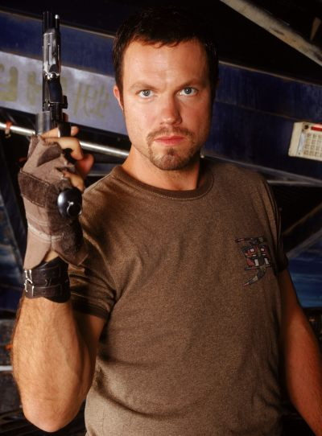
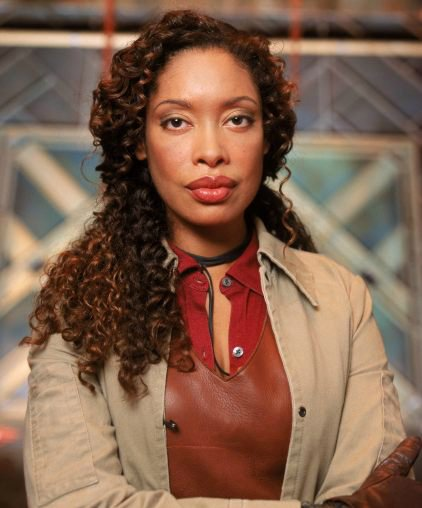
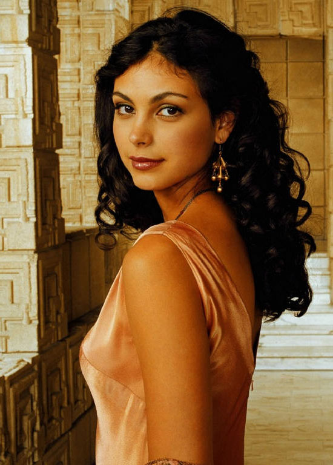
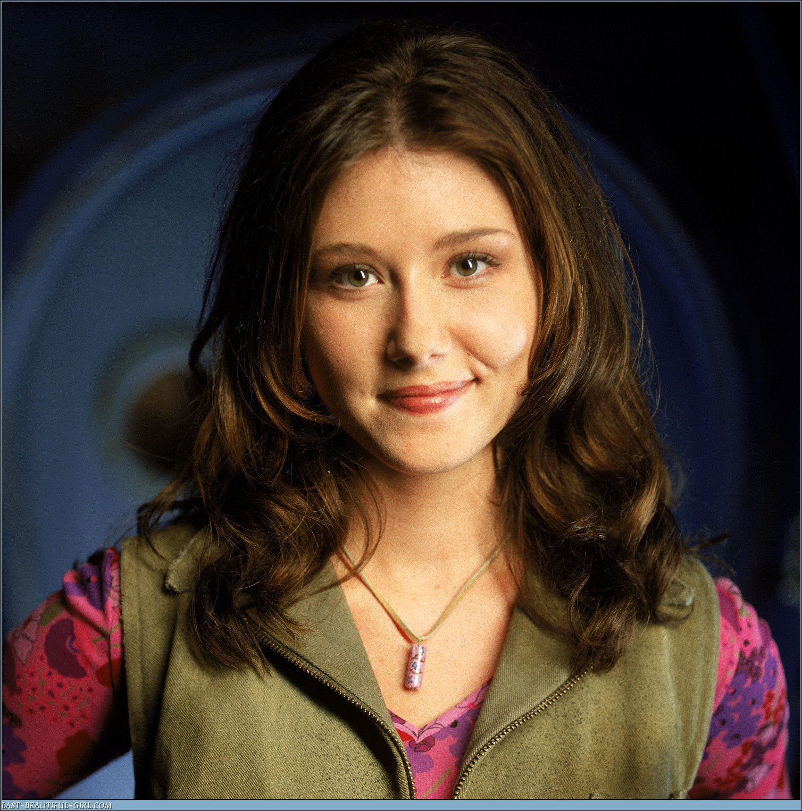
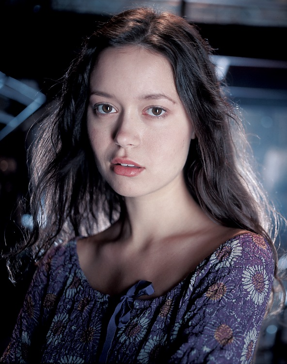
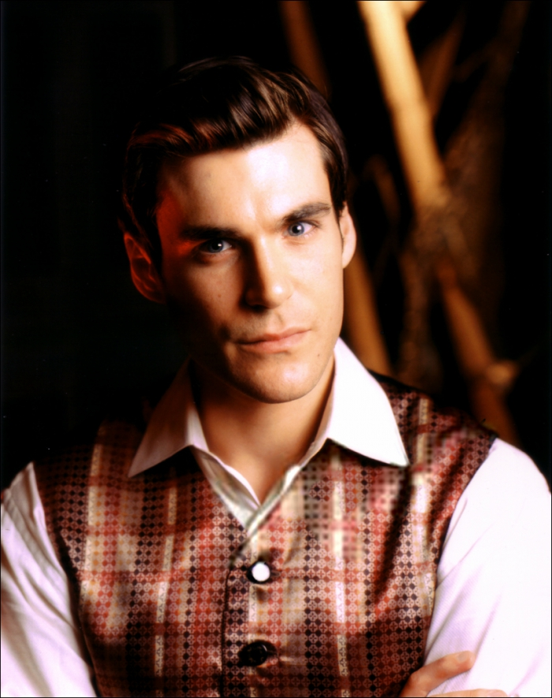
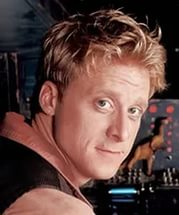

Мэл нанял его, предложив больше денег, чем предыдущий наниматель. Джейн оказывается в центре любой перестрелки. В большинстве случаев ведёт себя как простой парень, не отягощённый интеллектом, но иногда кажется, что он всего лишь притворяется простаком. Джейн готов предать друзей за личную выгоду, но позднее сам стыдится своих поступков. Обожает оружие, невероятно трепетно относится к своей коллекции ножей и любимому автомату «Вере».
Джейн Кобб

Зои Эллейн Уошбёрн

первый помощник капитана на борту Серенити. Зои — давний боевой соратник Мэла и жена Уоша. Как и Мэл, она предпочитает молчать о своём прошлом. Известно, что она служила с Мэлом во время войны. Зои во всём слушается своего капитана, за одним исключением: она вышла замуж за Уоша. Зои — единственный член экипажа «Серенити», которая называет капитана «сэр» и относится к его указаниям как к приказам вышестоящего офицера.
Инара Серра

компаньонка (в XXVI веке — эквивалент куртизанки или гейши). Как и куртизанки XVII века, Инара имеет высокий социальный статус. Её отношения с Мэлом весьма сложны. Они испытывают симпатию друг к другу, хотя сами в этом никогда не признаются. Мэлу, естественно, не нравится, чем Инара зарабатывает на жизнь (довольно часто он называет то, что она делает, проституцией, и это её оскорбляет), но он не может отрицать, что присутствие Инары на борту придаёт экипажу Серенити более респектабельный вид.
Кейуиннит Ли «Кейли» Фрай

механик корабля. Самоучка, способная содержать Серенити в рабочем состоянии благодаря природному дару механика. Кейли влюблена в Саймона Тэма, хотя их отношения развиваются очень медленно. Она весьма открытый и жизнерадостный человек, и её любит вся команда.
Малькольм «Мэл» Рейнольдс

капитан Серенити и бывший сержант армии Независимых в ключевой битве за Долину Серенити (англ. Battle of Serenity Valley). О капитане известно мало. Корабль стал его домом, а экипаж заменил ему семью. Он берётся практически за любую работу и не упускает случая при возможности чем-нибудь насолить Альянсу.
Ривер Тэм

в детстве была вундеркиндом и гением. Но после опытов, которые ставили над ней учёные Альянса, она ведёт себя непредсказуемо, иногда даже опасно. В сериале и фильме Ривер находится на пути к выздоровлению, постоянно борясь с «внутренними демонами». Её телепатический дар позволяет ей читать мысли и предчувствовать будущее. Разговаривает загадками, иногда говорит о себе в третьем лице.
Доктор Саймон Тэм

выдающийся хирург из богатой семьи. Находится в бегах после того, как вызволил свою сестру Ривер из рук правительственных учёных Альянса. Он пытается отвечать взаимностью на чувства Кейли, но сдержанность характера, а также различные обстоятельства ему постоянно мешают.
Хобан «Уош» Уошбёрн

пилот Серенити и тихий муж Зои. Ему не нравится, что Зои всегда слушается капитана. Уош стал пилотом, чтобы увидеть звёзды, так как с поверхности его мира они не были видны. Единственная причина, по которой Уош не стал лучшим пилотом из своего класса лётной школы — взлом базы данных школы опытным хакером по кличке «Мистер Вселенная».
Дерриал «Пастор» Бук

священник (пастырь) с тёмным прошлым. Ещё один загадочный человек. Он довольно хорошо управляется с оружием, осведомлён о криминальных обычаях и имеет другие знания, не свойственные священникам. Однако, он искренне верует в Бога и всегда старается поступать соответственно.